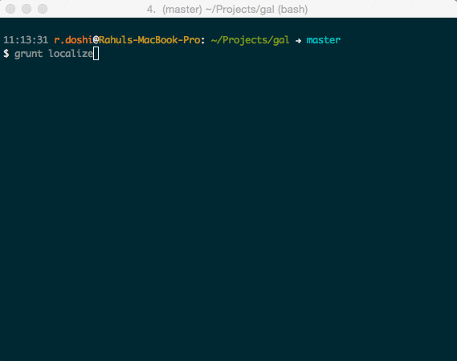
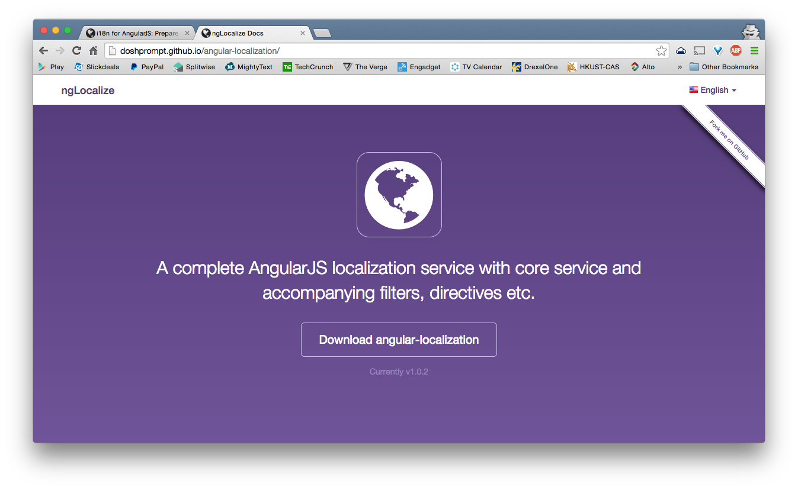

Internationalize AngularJS
A Globalized App for a Global Audience
Presented by Rahul Doshi | @doshprompt
from

Agenda
What are i18n & L10n?
“i18n or Internationalization is the process of designing a software application so that it can potentially be adapted to various languages and regions without engineering changes.”
“L10n or Localization is the process of adapting internationalized software for a specific region or language by adding locale-specific components and translating text.”
Localization (which is potentially performed multiple times, for different locales) uses the infrastructure or flexibility provided by internationalization (which is ideally performed only once, or as an integral part of ongoing development).
The terms are frequently abbreviated to the numeronyms i18n (where 18 stands for the number of letters between the first i and last n in internationalization) and L10n respectively, due to the length of the words.
E.g. R3d D3i
Why is multilingual support so important?
“The next billion will differ in more ways than just geography. Most new Internet users will not speak English as their first language”
Is English Still the Language of the Internet?
Current Efforts
- Angular's native $locale service
- ECMAScript Internationalization API
-
Community-driven projects
- angular-translate
- angular-gettext
- various online tutorials
AngularJS $locale
It provides localization rules for various Angular components.
It works well for number systems, formatting, grouping and precision as well as decimal marks.
It also does datetime, currency formatting.
Used through the built-in angular filters.
ES Internationalization API
Edition 1 provides most of the services that are similar to $locale along with most notably, Collation, in two scenarios: sorting a set of strings and searching within a set of strings. Collation is parameterized by locale and aware of Unicode.
Intl object Currently supported in IE11, Chrome and Firefox Nightly Builds controlled via a flag. Compatibility Table
Upcoming edition 2 will support some more common use-cases like message formatting: format a string with placeholders, including plural and gender support. However, it will be based on Es6 and will not be backwards compatible anymore.
Some drawbacks of open-source libraries
angular-translate uses ICU's MessageFormat which uses a different kind of "interpolation", e.g. it uses single curly braces instead of double curly braces, which means one misses all features angular built-in interpolation brings (filters etc).
angular-gettext is too much magic, not enough control in the hands of the app developer. also, it bypasses certain useful angularjs functionality like the ngPluralize directive.
Most tutorials available on the web only address a very small part of the problem, some miss the point or don't acknowledge the larger issues.
If you want to know more follow the link from this Google Groups discussion thread, but it looks something like this:

Thinking about a solution
Addressing all aspects of globalization with respect to your app is a large and complex problem. There are a lot of ways of approaching the issues, and no real right or wrong method for any of them.
So it's best to get started early -- the sooner, the better.Design keeping word length(s) in mind
EN: desktop
FR:
Ordinateurs de bureau et portables
translates to 'desktop computer' since all French translations of 'desktop' mean 'table' (literal translation)
BUT
DE: Donaudampfschiffahrtsgesellschaftskapitän
EN:
Danube steamship company captain
Always treat strings as phrases, never individual words
Imagine the previous example,
what would have happened if each word in the English string was translated separately?
What would have become of 3/4 of them when the user switched to the German version of the page?
Another scenario, what if the order of words is different as per the grammar of different languages?
EN: My name is Rahul Doshi
HI: Mera naam hai Rahul Doshi
HI: Mera naam Rahul Doshi hai
The role of your backend
Assuming that you will not be performing resource intensive operations like searching and sorting on the frontend, your API server will have ready to handle requests in multiple languages.
- Saving columns that may be sort keys in the future in all supported languages
- Sorting data (say on the title) based on titles being in different languages
- Searching through data based on user input in different languages
- Accepting a language param in each request or in the header
Ensure any components used are also localization-friendly
Any third party components that you use or build yourself should also support localization.
- datepicker - date formatting, start day of week
- timepicker - time format (military, 12/24 hr)
- inputs like select2 - accept multiple language keystrokes (unicode)
Leverage all of Angular's excellent baked in features
AngularJS already provides framework-level support for a lot of things so there is no need to re-invent the wheel, use what you already have and build better, more relevant stuff on top of it instead.
You just need to include the locale-specific add-on files but good to know about these things too.
Getting a user's locale
“Unfortunately, there is no 100% reliable way in the browser of getting the user's locale information - unless you ask the user explicitly.”
The Problem
You've probably done this hundreds of times:
var date = new Date();And possibly displayed it in the browser's default locale by calling:
date.toLocaleDateString();
//returns e.g. "Friday, August 24, 2012"The Solution
There are some unreliable hacks, like querying navigator.language in Chrome and Firefox,
or navigator.browserLanguage in IE,
or looking at the HTTP Accept-Language header using XHR.
So, just ask if you need to. Or provide a way for the user to select their locale preferences.
Then, convert what we know about the user's locale to a language tag, a simple string that represents the user's preferred language and, optionally, where they are (or wish they were for the purposes of communication).
You can store these choices by setting a cookie or in the browser's local storage as you prefer.
Language Tags and Locales
“Language tags are used to help identify languages, whether spoken, written, signed, or otherwise signaled, for the purpose of communication.”
The Angular Way
Architecture
Our solution is based on a simple architecture. We will have a folder for each language that we would like to support. Inside will be localized resource files for each route or module we want to support.
We will also pick a default language that will be used to fall back to the site’s native language if a given user’s language is not supported.
100% of the code is run on the front-end within the browser, and no special server-side support needs to be provided.
The proposed directory structure:
lang
├── en-US
│ ├── common.json
│ ├── login.json
│ ├── home.json
│ └── ...
├── fr-FR
│ ├── common.json
│ ├── login.json
│ ├── home.json
│ └── ...
└── ...
Below is an example of the file format:
{
"cancel": "Cancel",
"no": "No",
"ok": "OK",
"yes": "Yes"
}A First Approach
A service will form the core of our localization engine, providing an interface that will be responsible for checking the user's language settings and requesting the appropriate resource based on the language.
It will also provide several methods, a lookup method that will return a localized string for a given key from the loaded resource file, a way to get/set the locale, and finally, a way to setup some defaults.
Lastly, it will notify us (via promises) when an individual file or a group of files has been successfully loaded into memory and is ready for use.
JavaScript:
$scope.strings = {};
locale.ready('common').then(function() {
$scope.strings.helloWorld = locale.getString('common.helloWorld');
});HTML:
<p>{{ strings.helloWorld }}</p>Output:
Hello World!
Implementation: Take Two
Using Fliters:
<p>{{ 'common.helloWorld' | i18n }}</p>Output:
Hello World!
Performance Considerations
Improvements with a Directive:
<p data-i18n="common.helloWorld"></p>Output:
Hello World!
Useful Additions
Inline Substitutions
example.json
{
"nameOuput": "My name is %fullname"
}Filter:
<p>{{ 'example.nameOutput' | i18n:'Rahul Doshi' }}</p>Directive:
<p data-i18n="example.nameOutput" data-fullname="Rahul Doshi"></p>Setting Localized Attributes
Good for when you want to avoid angular's interpolation in setting certain attributes on the DOM element such as placeholder for an input.
<input data-i18n-attr="{placeholder: 'login.emailPrompt'}">Pluralization
(Experimental -- using inside ng-pluralize)In your controller:
$scope.numCount = 1;
$scope.pluralStrings = {
nobodyIsViewing: 'common.nobodyIsViewing',
onePersonIsViewing: 'common.onePersonIsViewing',
manyPeopleAreViewing: 'common.manyPeopleAreViewing'
}
On the page:
<input type="number" min="0" data-ng-model="personCount">
<span
data-ng-pluralize
data-count="personCount"
data-when="{
'0': '{{ pluralStrings.nobodyIsViewing | i18n }}',
'1': '{{ pluralStrings.onePersonIsViewing | i18n }}',
'other': '{{ pluralStrings.manyPeopleAreViewing | i18n:personCount }}'
}">
</span>Gender
Experimental: using with ng-switch
<div data-ng-switch="user.gender">
<span> data-ng-switch-when="m" data-i18n="common.male"></span>
<span> data-ng-switch-when="f" data-i18n="common.female"></span>
</div>ng-if also works with filter
Gender:
<span data-ng-if="user.gender == 'm'">{{ 'common.male' | i18n }}</span>
<span data-ng-if="user.gender == 'f'">{{ 'common.female' | i18n }}</span>
Bonus
grunt-angular-localization
Resources
angular-localization
Reference Links
- Using the ECMAScript Internationalization API
- More on the ECMAScript Internationalization API
- Filter Performance Degradation
- Localizing HTML Attributes
Credits
- Kevin Hakanson for inspiring me to present on this topic.
- Jim Lavin for setting me down this path in the first place!